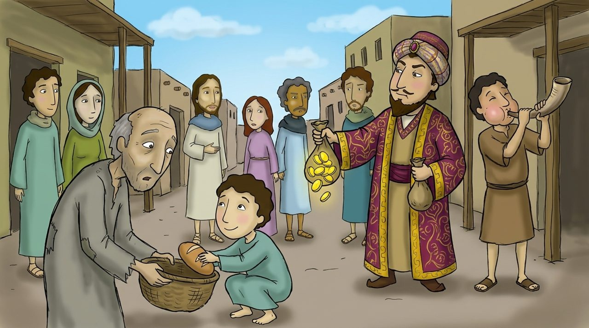
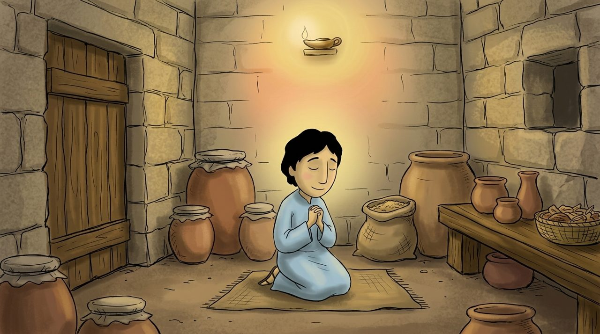
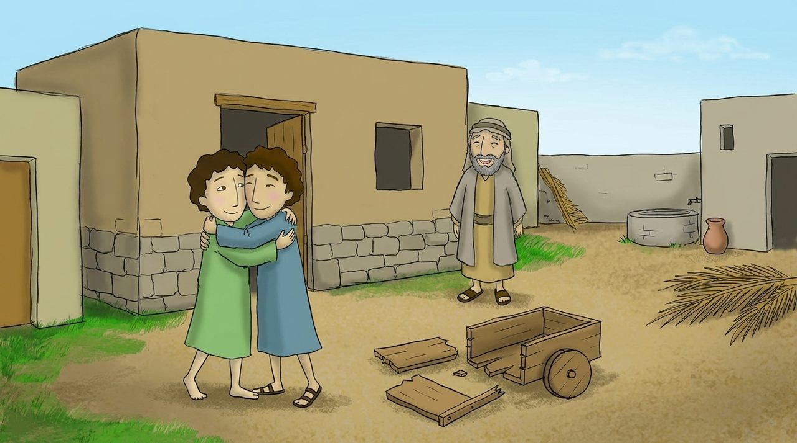

Tap the yellow words to see what they mean. The 🔊 button reads aloud.
What will we learn today?
We will learn the prayer Jesus taught.
We will learn that God sees what we do in secret.
We will pray to our Heavenly Father using the Lord's Prayer.

Scene 1 · Matthew 6:1–4
Helping in secret
When some people helped the poor, they blew trumpets and bragged. They wanted people to praise them.
Jesus said: “When you give , do not let your left hand know what your right hand is doing. Your Father who sees in secret will reward you.”

Scene 2 · Matthew 6:5–8
Pray in your room
“When you pray, do not pray on the street corners to be seen by people. Go into your , close the door, and pray.”
“God does not hear you just because you use many words. Your Father knows what you need before you ask Him.”
Scene 3 · Matthew 6:9–13
Pray like this
Jesus taught how to pray. This is called the Lord's Prayer.
“Our Father in heaven, may your name be kept holy. Let your Kingdom come. Let your will be done on earth as it is in heaven. Give us today our . Forgive us our debts, as we also forgive our debtors. Bring us not into temptation, but deliver us from the evil one.”

Scene 4 · Matthew 6:14–18
A forgiving heart
“If you people their trespasses, your Heavenly Father will also forgive you.”
When you , wash your face and be cheerful. We show this to God, not to people.
Memory verse of the week
“Our Father in heaven! May your name be kept holy.”
Matthew 6:9 · in simple words for children
“Our in ! May your name be kept .”
Choose the words for the blanks in order.
Word list
Tap to see the meaning
Check yourself
4 questions
Let’s think
How does it feel to be able to call God 'Father'?
What is your favorite part of the Lord's Prayer?
Is there someone you need to forgive?
Draw it
Draw yourself praying to your Heavenly Father in your room.
Draw on paper and send a photo to your teacher
What will you pray for?
Let’s pray together
Our Father in heaven, thank You for calling me Your child and teaching me how to pray. Help me to live only for You, not to be seen by people. Help me to forgive my friend who did wrong to me. I pray in the name of Jesus Christ. Amen.